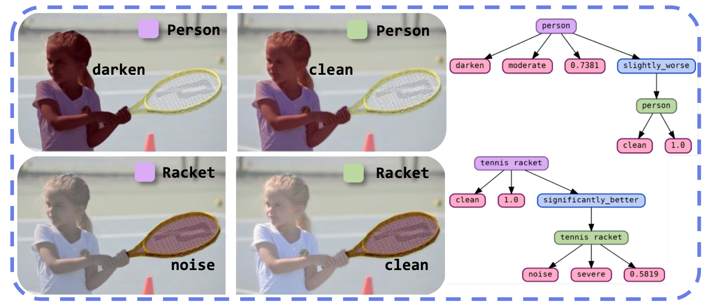
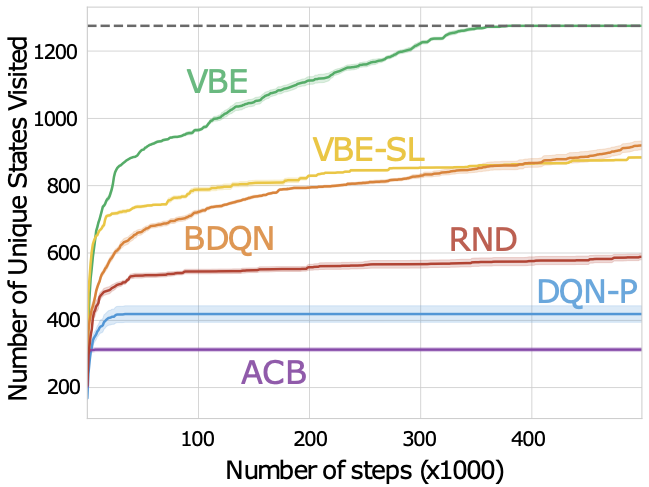
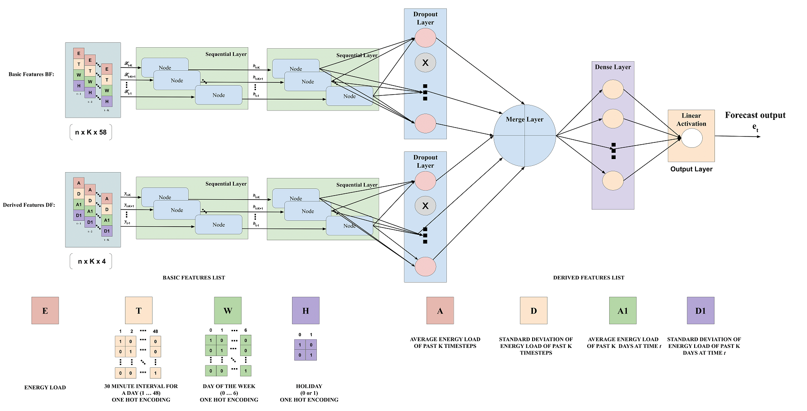
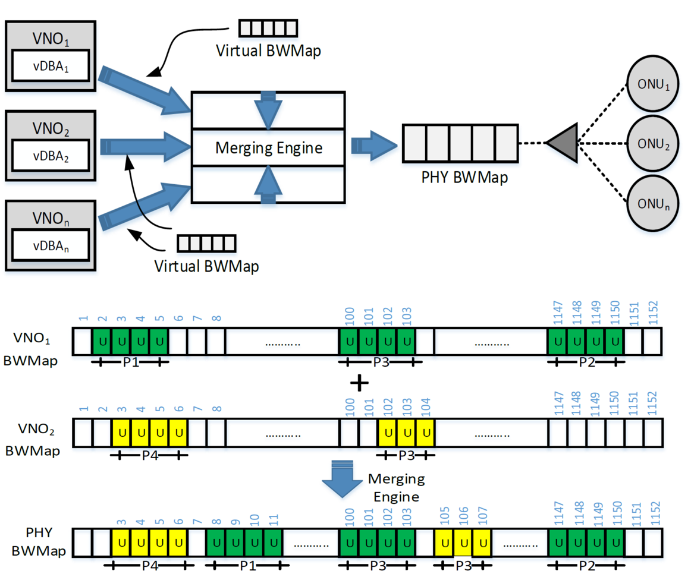
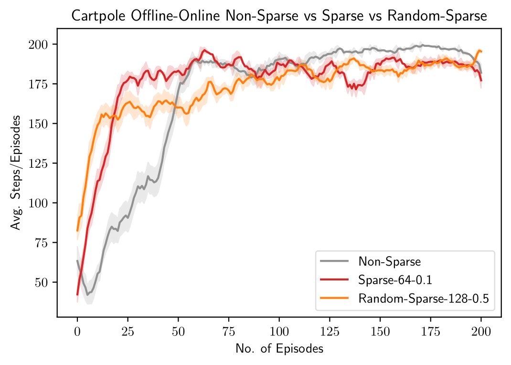
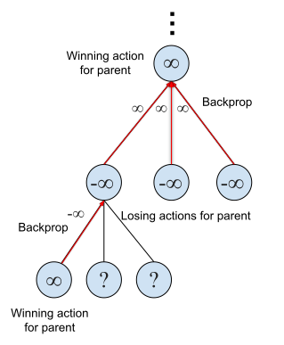
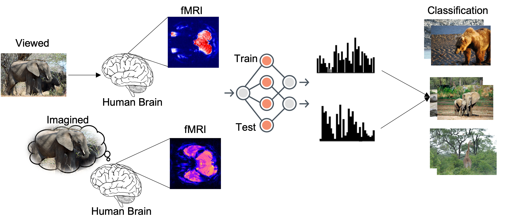
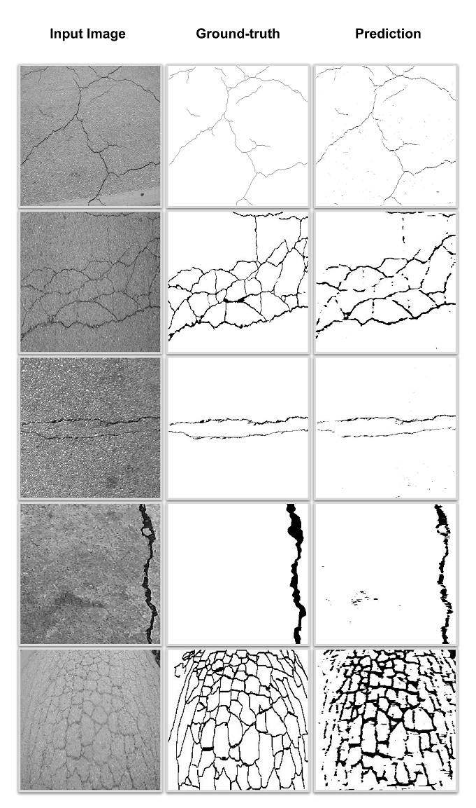

|
Abdul Wahab
wahab1 (at) ualberta (dot) ca
I’m a Machine Learning Scientist at Amii, where I lead applied AI projects involving reinforcement learning, large language models, and multi-agent systems across domains such as smart grids, robotics, field service, games, and healthcare.
Previously, I was an Associate Researcher at Huawei Canada, where I worked on personalized reinforcement learning agents, image quality assessment, and the camera ISP pipeline.
I completed my master’s in computer science at the University of Alberta with Martha White. My research focused on exploration in reinforcement learning.
CV /
LinkedIn /
Google Scholar /
Github
|
|
|

|
Panoptic Pairwise Distortion Graph
Muhammad Kamran Janjua,
Abdul Wahab,
Bahador Rashidi
International Conference on Learning Representations (ICLR), 2026
code /
website
We propose a new task called Distortion Graph (DG), which represents pairs of images as a region-grounded topology. The graph compactly captures dense degradation information, including distortion type, severity, pairwise comparison, and quality score, in an interpretable structure.
|
|

|
Value Bonuses using Ensemble Errors for Exploration in Reinforcement Learning
Abdul Wahab,
Raksha Kumaraswamy,
Martha White
Reinforcement Learning Journal, 2025; presented at RLC 2025
★ thesis /
code
Reward bonus methods for exploration do not provide first-visit optimism because they propagate local uncertainty only after it has been observed. We extend reward bonuses to value bonuses and propose Value Bonuses with Ensemble Errors (VBE), which maintains an ensemble of random action-value functions (RQFs) and uses their estimation errors to provide first-visit optimism and deep exploration.
|
|

|
Short-term load forecasting using bi-directional sequential models and feature-engineering
Abdul Wahab,
MA Tahir,
N Iqbal,
A Ul-Hasan,
F Shafait,
SMR Kazmi
IEEE Access, 2021
code
We propose a general method based on bi-directional sequential models (LSTMs) for short-term energy load forecasting suitable for
both individual household energy forecasting and regional energy forecasting.
|
|

|
Capacity sharing approaches in multi-tenant, multi-service PONs for low-latency fronthaul applications based on cooperative-DBA
Arsalan Ahmad,
Abdul Wahab,
Marco Ruffini,
Frank Slyne,
Sanwal Zeb,
Rana Azhar Khan
Optical Fiber Communications Conference and Exhibition (OFC), 2020
poster
We propose and compare algorithms to allocate upstream PON capacity, where multiple virtual operators generate independent frame-level allocation over a shared infrastructure. Our fragmentation-aware approach shows the ability to limit latency increase to a few microseconds.
|
|

|
Understanding the role of representations in Offline-Online reinforcement learning
Abdul Wahab,
Muhammad Kamran Janjua,
Wesley Chung,
Maryam Hashemzadeh,
Martha White
We use Two-timescale networks (TTN) in an offline-online setting: an agent is first trained on offline data, then updates its representations and policy online. We empirically study sparsity (FTA), input transformations, data augmentation, and self-supervised contrastive objectives to identify which methods contribute most to effective representations and stable online learning.
|
|

|
A strong Clobber 2D Player using CGT MCTS-Solver
Abdul Wahab,
Muhammad Kamran Janjua,
Saqib Ameen
report, code, presentation
In this project, we couple combinatorial game theory (CGT) enhancements such as an endgame database and subgame simplifications with the Monte Carlo Tree Search (MCTS) solver to design a strong 2D Clobber player.
|
|

|
Learning Perceptual and Quasi-Perceptual Representations from fMRI
Abdul Wahab,
Muhammad Kamran Janjua
report, code, presentation
Human visual system depends on imagery representations in addition to the visual input to build a concrete holistic picture of the object of interest. These representations are correlated and shared in the human brain and help provide a crisp understanding of the environment. In this work, we study if a similar correlation exists in Artificial Neural Networks (ANNs) and if the correlation is strong enough to use the corresponding fMRI data of both perceptual and quasi-perceptual experiences interchangeably for downstream tasks such as object category prediction.
|
|

|
Line-scan camera-input processing with ConvLSTMs for Road Condition Monitoring
Abdul Wahab,
Gerd Reis,
Didier Stricker
demo code
In this work, we explored the advantages of using a line-scan camera in industrial applications, where the point of observation is a single plane, for monitoring, classification, and segmentation of moving objects. A ConvLSTM-based architecture was proposed, which extracts temporal-correlation from the sequence of line-scans to compensate for the loss of spatial-information in the individual line-scan (single row of pixels). The methodology evaluated on road-crack segmentation datasets outperforms the current benchmark on four public datasets. The methodology was also evaluated on a novel dataset collected on the roads of Islamabad, Pakistan. The methodology was also implemented for a seed-sorting system.
|
|